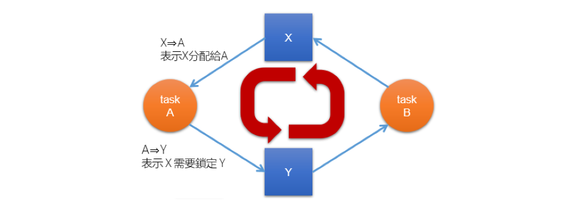

OS | Deadlock (Unfinished)
Operating System: Design and Implementation course notes from CCU, lecturer Shiwu-Lo.
Liveness 指的是 Task 在執行期間必須滿足的一組屬性，以確保 Task 在執行週期中能不斷進行下去，這裡舉了三種例子導致 Liveness failure 的情況: Deadlock, Livelock, Priority inversion，並且會在之後介紹一些預防 Deadlock 的方式。
- What is deadlock?
- How to prevent deadlock?
- What is livelock?
- What is priority inversion?
- Priority inheritance protocol, priority ceiling protocol
Deadlock
6.1 What is deadlock?
- Deadlock 就是指一群 task 互相等待對方釋放資源，造成所有 task 都無法繼續執行的狀況，例如:
TaskA TaskB 1. lock(y) 2. lock(x) 3. lock(x) 4. lock(y) - 在這種情況下 A 等 B 的 unlock(y)，B 等 A 的 unlock(x)，造成 A 跟 B 都無法繼續執行
- 要注意並不是每次都會發生 deadlock，只有在上面這樣交錯 lock 的情況才會發生 deadlock

- 簡單判別 Dealock 的方式是如上圖，假如一個圖中出現 Cycle，那麼就代表有可能會發生 deadlock。
- 一種解決方式是索取資源時都按照順序，兩個 Task 都必須先去 lock(x) -> lock(y)，這樣就不會發生 deadlock
6.2 How to prevent deadlock?
要發生 deadlock 必須滿足以下四個條件:
- Mutual exclusion: 資源不能被同時使用
- Hold and wait or resource holding: Task 持有一個資源並且等待另一個資源
- No preemption: OS 無法把分配出去的資源重新分配
- Circular wait: Resuource allocation graph 中至少有一個 cycle
注意要發生 deadlock 必須滿足以上四個條件，所以只要破壞其中一個條件就可以避免 deadlock 的發生
Prevention mutual exclusion
Deadlock 是因為我們想要使用 Critical section，而 Mutual exclusion 是 CS 的主要特性，所以這是很難避免的條件
- Mutual exclusion 是 Critical section 的主要功能
- 通常也是 Resource 的本身特性，例如: 印表機不可能讓兩個 Task 同時使用
- 在一些情況下可以改寫演算法，讓 Resource 可以 Lock-free，例如: Lock-free concurrent queue
- 或讓每個 Task 都有自己的 Resource，不需要共用
- 例如: ptmalloc，每個 task 都有自己的 pool 去分配記憶體，如果不夠再向其他 task 借
- 或讓每個 Task 都有自己的 Resource，不需要共用
Hold and wait
這個就是可以去避免的條件，這裡講一些避免的方法
- 所有的 Task 在一開始就把所有的資源都 lock 住
- 造成資源的使用率很低，因為有些資源可能不會被使用到，例如: 要打開 Powerpoint 但是因為 PPT 有可能會使用到印表機，所以要把印表機 lock 住?
- lock 的時間拉長，從「需求開始 -> 資源使用結束」變成「程式開始 -> 資源使用結束」
- 如果要使用新的資源，就必須先把手上的資源都釋放掉
- 看 6.1 的範例，B 要 lock(x)，就必須 unlock(y)，這樣就不會發生 deadlock
- 這樣的缺點是程式碼很難寫，B 會 lock(y) 就是想要使用 y，應該不太可能隨便的去 unlock(y)
- 並且有可能會造成 starvation，想要使用更多資源的 task 會更容易 starvaion
No preemption
No preemption 也是 Resource 的本身特性，因為如果讓不能 preempt 的資源，變成 preemptable 代價通常很大
印表機原則上是不能被 Preempt 的，例如我要緊急印資料給客戶，此時直接把印表機關機，重開這樣就是一種使印表機 Preemptable 的方法
- 有些時候可以使用 rollback 的方式解決
- 例如: 兩個 task 都去執行，到最後要去 commit 的時候去決定誰要 rollback
- 雖然 rollback 在 worst case 下是很爛的方法，但在一些情況下是可以接受的
- 也可以用 multi-version 去解決
- 例如: RCU(Read-Copy-Update)，在更新的時候不會去修改原本的資料，而是複製一份新的資料，並在更新完後再去切換
- 或者是如果沒辦法立刻 lock 某個資源的話，該 task 就釋放所有的資源(不是去搶別人，就是讓別人搶)
Circular wait
這是最容易避免的條件，只要讓所有的 Task 都按照順序去 lock 資源就可以避免
- 依照特定順序去 lock 資源，例如: 先 lock(x) 再 lock(y)
- 這樣的方是與資源的特性等等無關，主要與程式碼的撰寫方式有關
- 例如: lock 的時候依照 memory address 的順序去 lock
- 但是這樣的缺點是有可能造成資源的使用率偏低
- 本來是先 lock(b) -> lock(a)，需要的時候才去 lock
- 變成 lock(a), lock(b)，但是在執行 b 的處理的時候可能不會用到 a，造成 a 的使用率偏低
6.3 Deadlock avoidance
之前講的是在使用時避免 deadlock，這裡講的是在設計時就避免 deadlock
這裡先介紹兩個著名的 Deadlock avoidance 演算法
- Priority ceiling protocol(PCP)
- 可以防止系統進入 deadlock
- 高優先權的 task 等待低優先權的 task 釋放資源，最多等一次
- 是非常有用且知名的 Real-time OS 常用演算法
- 需要搭配 Rate-monotonics scheduling(RMS) 使用
- RMS 是 Real-time OS 常用的排程演算法
- Stack resource policy(SRP)
- 特性上與 PCP 非常相似
- 可以搭配 Earliest deadline first(EDF) 排程演算法使用
Last Edit
12-08-2023 16:03